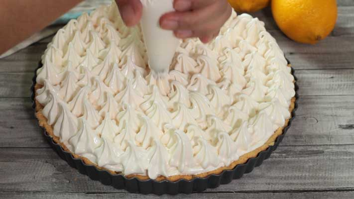

Lemon Pie

Creamy sweet and tangy lemon meringue pie with soft crumbly crust and Swiss marshmallow meringue, heaven in a slice!
Easy recipe that you'll love.
Author: Bea & Marco
Ingredients
The Base
- 1 cup all purpose flour, plus 1 tablespoon more (150 g)
- ½ teaspoon baking powder
- 2 tablespoon granulated sugar (25 g)
- ⅓ cup unsalted butter (75 g), cold and cut into small cubes
- 1 large egg, cold from the fridge
The Filling
- 1 can condensed milk (400 g)
- 3 large egg yolks
- ⅔ cup lemon juice (150 ml)
The Swiss marshmallow meringue
- ¾ cup granulated sugar (150 g)
- ¼ teaspoon cream of tartar
- ¼ teaspoon salt
- ½ teaspoon vanilla extract
- 2 tablespoon golden syrup
- 3 large egg whites (100 g), room temperature
Steps
The Base
- In a food processor, add in flour, baking powder, sugar and cold butter. Blend for a few seconds until the mixture becomes sand-like. Add in egg and blend again until it becomes a dough.
- Form into a flatten ball and place it on a cling film and cover it with another cling film. Roll the dough into a 23 cm (9 inch) diameter disk. We will be using a 20 cm (8 inch) pie pan.
- Remove the top cling film. Sprinkle some flour on top of the dough and spread evenly. This is to help the dough not to stick to the pie pan when we flip onto it. Gently but swiftly flip the dough (floured side facing down) onto the pie pan. If it breaks, don't worry. Just patch it here and there. The dough it a bit sticky but it is very forgiving. Adjust and accommodate the dough in the pie pan. Leave to chill in the fridge while we make the filling.
The Filling
- In a bowl, add in condensed milk and egg yolks. Mix just to combine. Add in lemon juice and mix again just to combine.
- Pour the filling into the chilled base and spread evenly. Bake at 170ºC (340ºF) in preheated oven for 20 minutes or until the base is golden brown and the filling is fully cooked. Set aside while we prepare the meringue.
The Swiss marshmallow meringue
- I use the ratio of 3:2 of sugar:egg white. I first weigh my egg whites and then calculate the ratio for the sugar.
- In a small pot, bring some water (around 2 inches height) to a gentle simmer. Place a bowl on top of it, it should not be touching the simmering water below. Add all of the meringue ingredients and whisk until the sugar is totally dissolved. The easiest way to check is rub the mixture between your 2 fingers and if it doesn't feel grainy then it's ready.
- Pour the mixture into a bowl of a standing mixer with the balloon attachment. Start with low speed and continue to the highest. Whisk until the bowl is totally cold. Your meringue is ready.
Assembling
- Spoon some meringue on top of the pie and spread evenly. Pipe more meringue on top and decorate as your heart desire. Grill in the oven for a few minutes to get that char effect. Remove from the oven, slice and enjoy!
Notes
- To make it easier to move around the removable bottom pie pan, I always put it on a baking tray.
Nutrition Facts
- Calories: 350.2 kcal
- Carbohydrates: 55 g
- Protein: 7 g
- Fat: 12 g
- Saturated Fat: 7 g
- Cholesterol: 105.3 mg
- Sodium: 156.1 mg
- Potassium: 220.6 mg
- Fiber: 0.4 g
- Sugar: 43.9 g
- Calcium: 139.6 mg
- Iron: 1 mg